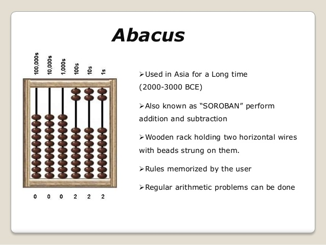
ABACUS
earliest known tool for use in computation was the abacus, developed in the period between 2700 and 2300 BCE in Sumer. The Sumerians' abacus consisted of a table of successive columns which delimited the successive orders of magnitude of their sexagesimal number system.Its original style of usage was by lines drawn in sand with pebbles . Abaci of a more modern design are still used as calculation tools today.
ORIGIN OF COMPUTER
The Antikythera mechanism is believed to be the earliest known mechanical analog computer. It was designed to calculate astronomical positions. It was discovered in 1901 in the Antikythera wreck off the Greek island of Antikythera, between Kythera and Crete, and has been dated to c. 100 BCE. Technological artifacts of similar complexity did not reappear until the 14th century, when mechanical astronomical clocks appeared in Europe The history of computer science began long before the modern discipline of computer science that emerged in the 20th century, and was hinted at in the centuries prior. The progression, from mechanical inventions and mathematical theories towards modern computer concepts and machines, led to a major academic field and the basis of a massive worldwide industry
When John Napier discovered logarithms for computational purposes in the early 17th century, there followed a period of considerable progress by inventors and scientists in making calculating tools. In 1623 Wilhelm Schickard designed a calculating machine, but abandoned the project, when the prototype he had started building was destroyed by a fire in 1624 . Around 1640, Blaise Pascal, a leading French mathematician, constructed a mechanical adding device based on a design described by Greek mathematician Hero of Alexandria. Then in 1672 Gottfried Wilhelm Leibniz invented the Stepped Reckoner which he completed in 1694.
 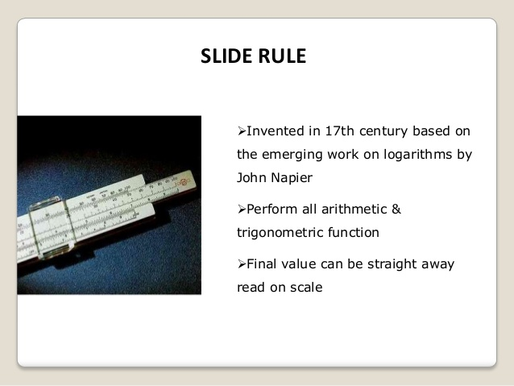
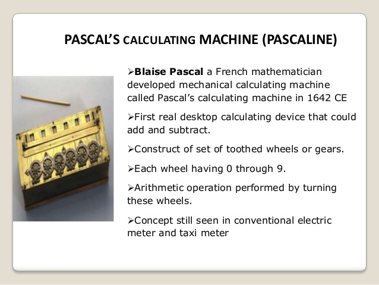
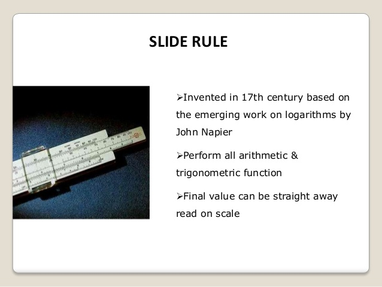
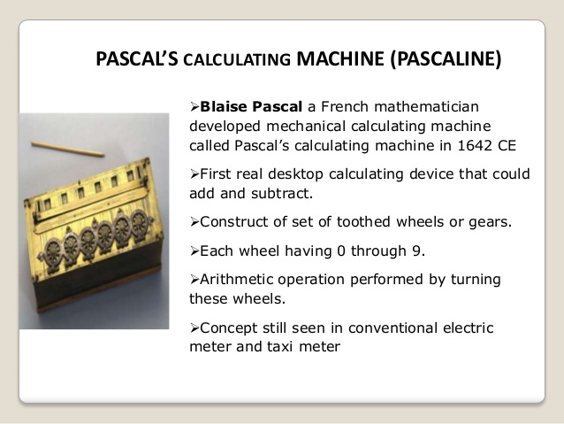
In 1837 Charles Babbage first described his Analytical Engine which is accepted as the first design for a modern computer. The analytical engine had expandable memory, an arithmetic unit, and logic processing capabilities able to interpret a programming language with loops and conditional branching. Although never built, the design has been studied extensively and is understood to be Turing equivalent. The analytical engine would have had a memory capacity of less than 1 kilobyte of memory and a clock speed of less than 10 Hertz
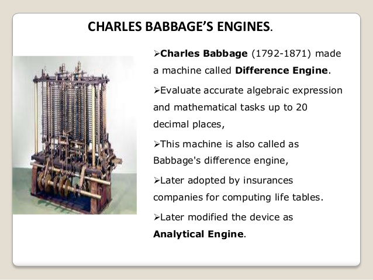 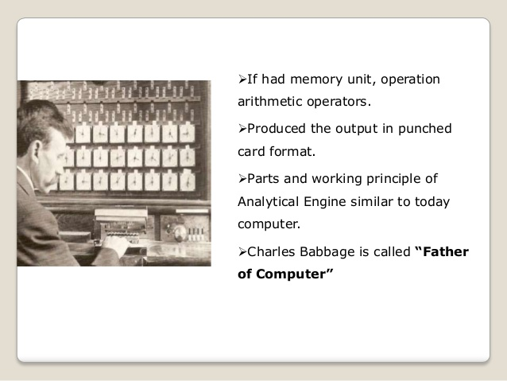 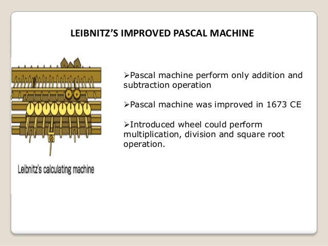Considerable advancement in mathematics and electronics theory was required before the first modern computers could be designed.
BINARY LOGIC
In 1702, Gottfried Wilhelm Leibniz developed logic in a formal, mathematical sense
with his writings on the binary
numeral system. In his system, the ones and zeros also represent true and false values or on and off
states. But it
took more than a century before George Boole published his Boolean algebra in 1854 with a complete
system that
allowed computational processes to be mathematically modeled
.
By this time, the first mechanical devices driven by a binary pattern had been invented. The industrial
revolution
had driven forward the mechanization of many tasks, and this included weaving. Punched cards controlled
Joseph Marie
Jacquard's loom in 1801, where a hole punched in the card indicated a binary one and an unpunched spot
indicated a
binary zero. Jacquard's loom was far from being a computer, but it did illustrate that machines could be
driven by
binary systems
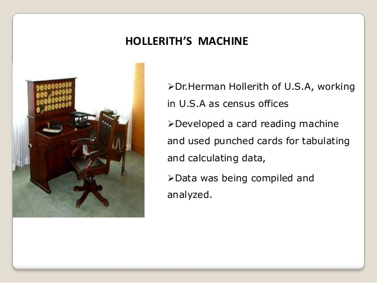
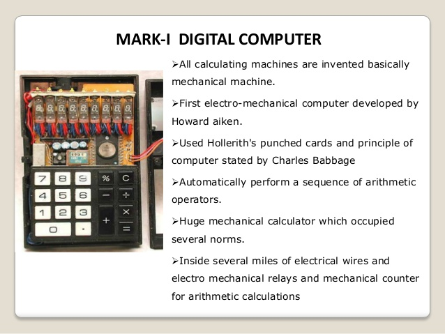
HOW IT WAS NAMED : COMPUTER
Before the 1920s, computers (sometimes computors)
were human clerks that performed computations. They were
usually under the lead of a physicist. Many thousands of computers were employed in commerce,
government,
and
research establishments. Most of these computers were women. Some performed astronomical calculations
for
calendars, others ballistic tables for the military.
After the 1920s, the expression computing machine referred to any machine that performed the work
of a human
computer.
Machines that computed with continuous values became known as the analog kind. They used machinery that
represented continuous numeric quantities, like the angle of a shaft rotation or difference in
electrical
potential.
The phrase computing machine gradually gave way, after the late 1940s, to just computer as the onset of
electronic digital machinery became common. These computers were able to perform the calculations that
were
performed by the previous human clerks.
Since the values stored by digital machines were not bound to physical properties like analog devices, a
logical
computer, based on digital equipment, was able to do anything that could be described "purely
mechanical."
The
theoretical Turing Machine, created by Alan Turing, is a hypothetical device theorized in order to study
the
properties of such hardware.
ENIAC,1946
Regarded as the first general purpose electronic computer, the Electronic Numerical Integrator and Computer (ENIAC) was initially commissioned for the use in World War II, but not completed until one year after the war had ended . Installed at the University of Pennsylvania, its 40 separate eight-foot-high racks and 18,000 tubes were intended to help calculate ballistic trajectories.
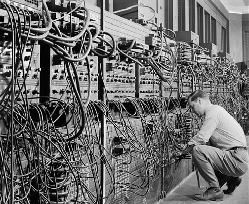 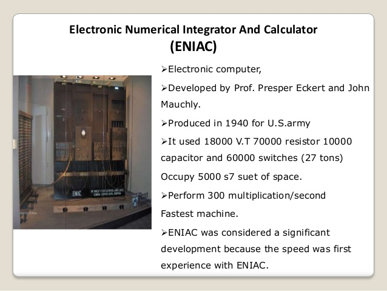 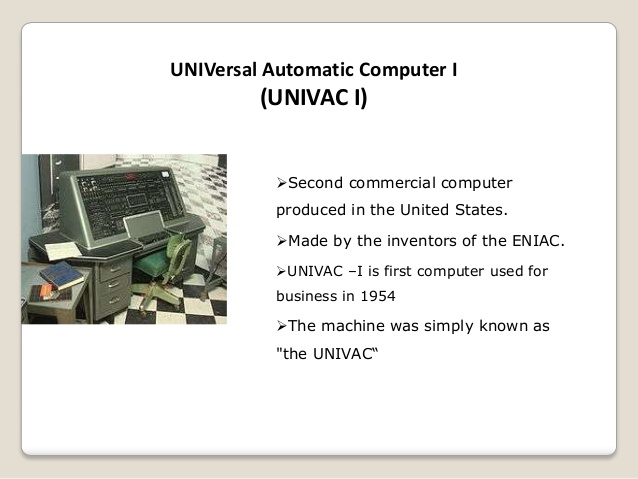Few more similiar computers were made
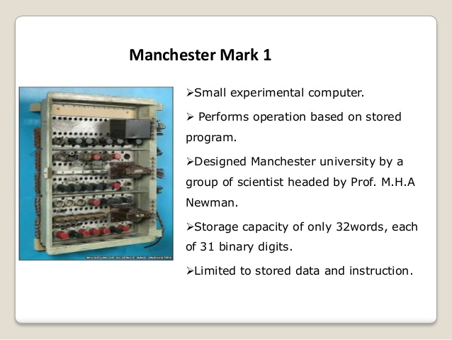
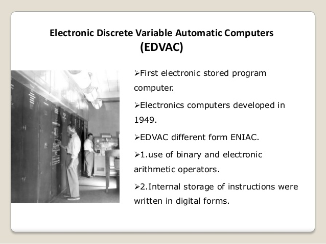
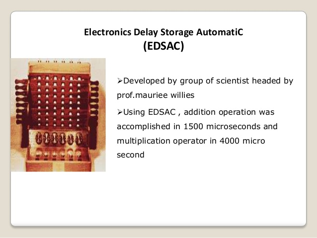
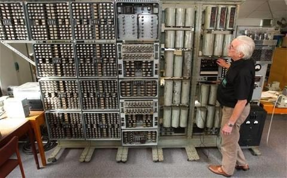
WITCH
the harwell computer,or WITCH(wolverhampton Insrumet for teaching computing from
harwell), was created.the 1951
computer was able to store data and perform basic arithematic.
IBM System/360, 1964
Part of a family of interchangeable computers, the IBM System/360 mainframe was the first to
cover a
complete
range of applications, from small to large, from commercial to scientific. Users were able to
enlarge or shrink
their setup without having to make headache-inducing software upgrades as well. Higher-end
System/360 models had
roles in NASA's Apollo missions as well as air traffic control systems.
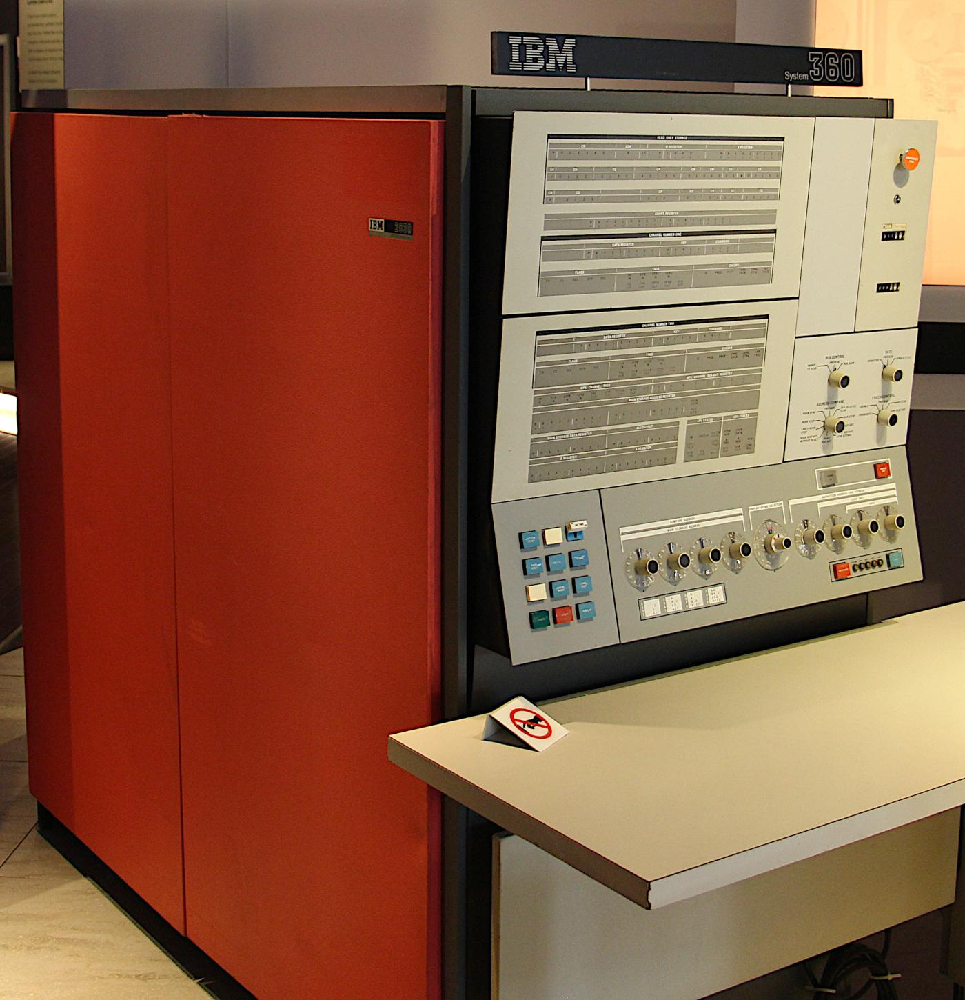
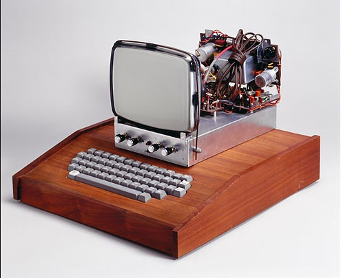
APPLE 1 in 1976
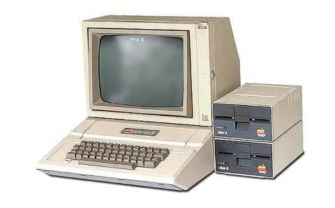
THE APPLE 2 in 1977
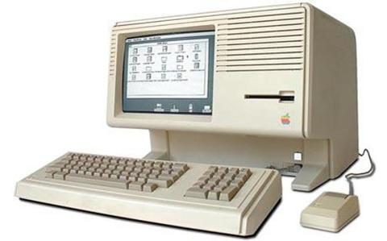
THE APPLE LISA in 1983
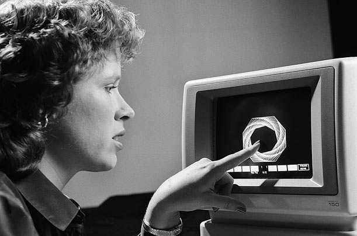